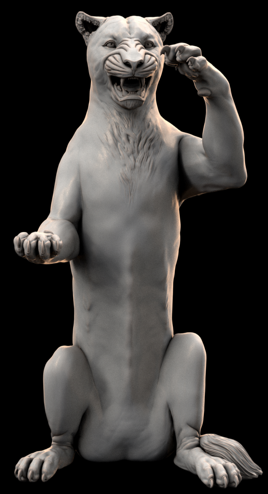

Creative Works
SGK Projects
Major projects spanning sculpture, technology, film, and family heritage.

La Leonessa — Carrara Bianco Venato marble
La Leonessa is a marble lioness sculpture carved from Carrara Bianco Venato marble, created as a permanent cultural donation to the village of Monteleone di Puglia, Foggia Province, Puglia, Italy — the birthplace of Steven's maternal grandmother, Assunta Capobianco (1897–1983).
The project encompasses a bilingual graphic novella — Strong Roots, Good Fruit (3rd edition, 2026) — 31 original AI-composed songs across two albums, a companion webapp, and Steven's forthcoming donation trip to Italy to present the sculpture to Mayor Giovanni Campese and the citizens of Monteleone.
My first two vibe coding projects were the QR-code initiated landing page — built for the unveiling ceremony of my La Leonessa marble sculpture — and this SGK personal website.
My approach is somewhat atypical. I use a standards file (SGK-BACKLOG.md) containing coding conventions, color palette choices, rules, and a feature backlog. I work with Claude (Anthropic) on a Pro subscription, with a unified GitHub repository. At the start of each session I attach the latest code files and backlog, and ask Claude to be ready to begin.
I proceed slowly and incrementally — not because I have to, but because it gives me time to test and think. The process is deliberately iterative and organic, converging toward my vision one session at a time. I keep Claude actively involved throughout but remain the orchestrator: I provide context, request changes, validate results, and commit to GitHub manually.
It's a blend of AI-in-the-loop development and a manually-driven software lifecycle — planning via the backlog file, implementation via Claude, integration via GitHub commits, and testing via manual validation. No automation layer, no CI/CD — just conversational control.
The approach offers high control, clarity, and reproducibility — deterministic context injection, tight GitHub integration, and deliberate pacing. But it also comes with real costs: it is error-prone due to manual syncing, slow, cognitively demanding, and vulnerable to stale context if I am careless about keeping Claude up to date.
When vibe coding tools offer persistent context, repo-aware agents, and automated file syncing — I plan to jump in.